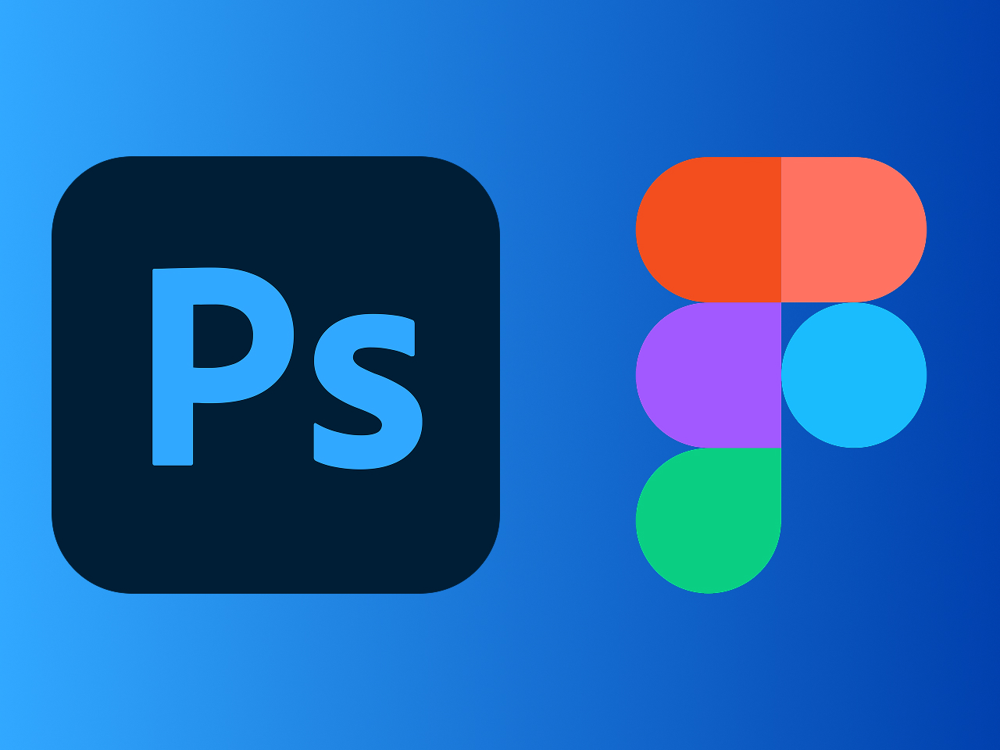
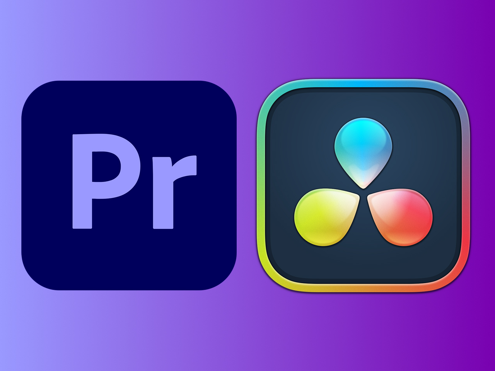
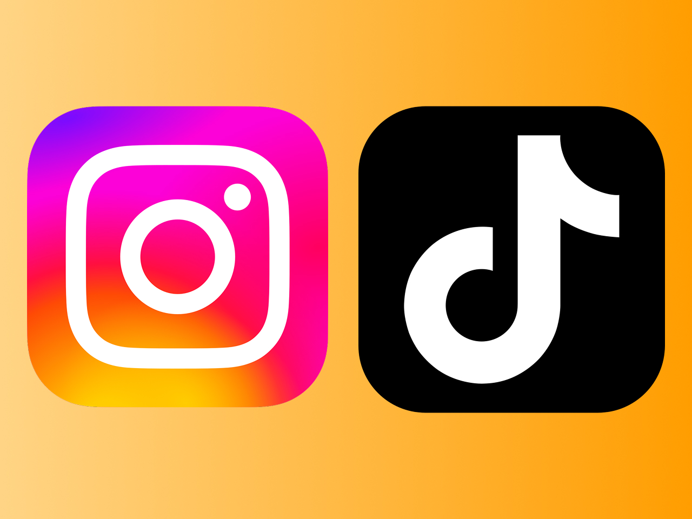
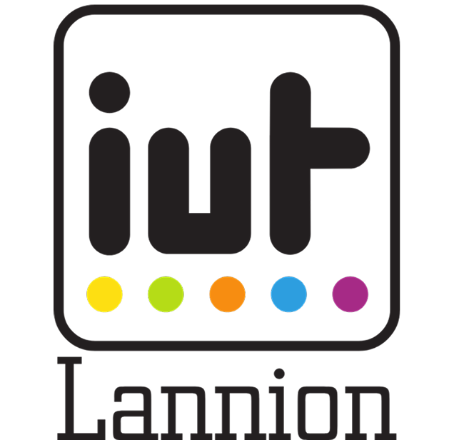
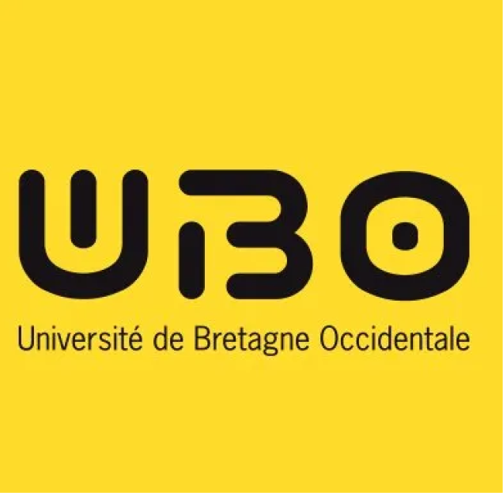
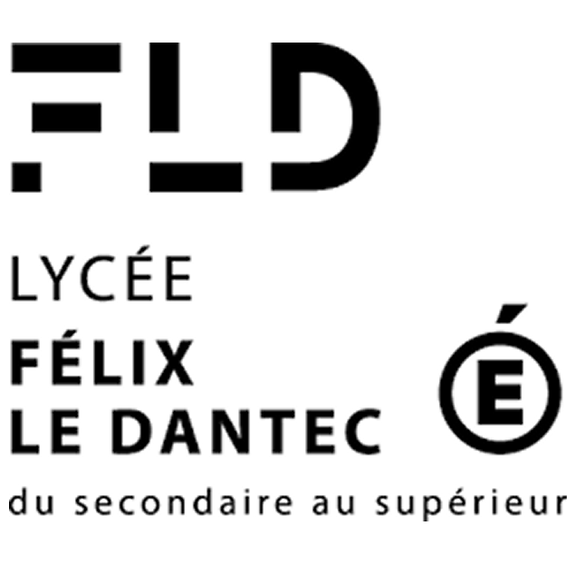
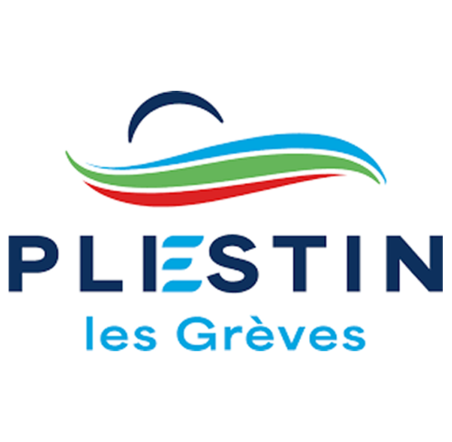

Hello, moi c'est
Malo Le Corre
Jeune breton de 20 ans, étudiant en première année de BUT MMI à l'IUT de Lannion. Fasciné par les domaines de la communication et du graphisme depuis longtemps, j'aide bénévolement mon club de foot concernant la gestion de ses réseaux sociaux.
Je suis en recherche d'alternance en communication/graphisme, pour une durée de 2 ans à compter de septembre 2026.
BIO
Bonjour ! Moi c'est Malo, un jeune breton, sportif, de 20ans originaire de Plestin-Les-Grèves, recherchant à vivre de ce que j'aime faire.
Depuis mon enfance, l'audiovisuel me fascine. Le confinement lors du COVID-19 m'a permis de découvrir particulièrement le montage photo et vidéo. De plus, ma curiosité m'a amené vers le monde de la communication. Fort de mon expérience en STAPS, j'ai intégré le BUT Métier du Multimédia et de l'Internet à Lannion, où je suis actuellement en 1ère année.
Depuis plusieurs années, mon attachement pour le football se rajoute à celui de la communication. J'aide au bon fonctionnement de mon club de football en gérant ses différents réseaux sociaux. Cela me permet de mettre en pratique mes compétences en communication, en montage vidéo, mais aussi en graphisme. De plus, j'entraine une équipe de jeunes et aide au bureau du club, le tout bénévolement.
Déterminé à aller droit au but, je suis actuellement à la recherche d'une alternance qui pourrait me permettre de fouler les terrains de ces domaines.
PROJETS

Festival À l'West Fest
Conception d'une communication visuelle
COMPÉTENCES

Graphisme
Création graphique

Audiovisuel
Conception audiovisuelle
Marketing et Gestion de projet
Convaincre et organiser

Réseaux sociaux
Gestion de compte sur les réseaux
FORMATIONS

BUT Métiers du Multimédia et de l'Internet
IUT de Lannion
Lannion

Licence STAPS
Université de
Bretagne Occidentale
Brest

Baccalauréat général
Lycée
Félix Le Dantec
Lannion
EXPÉRIENCES

Stage en communication
Plestin-les-Grèves
Employé commercial à Super U
Plestin-les-Grèves